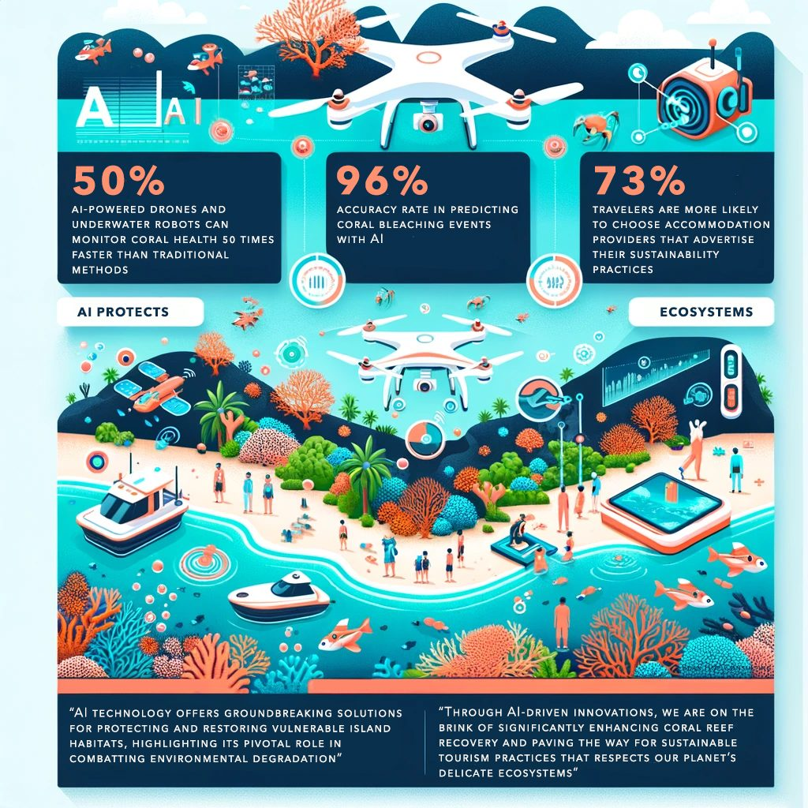

Eco-Friendly AI Innovations: A Beacon for Island Ecosystems

Eco-Friendly AI Innovations: A Beacon for Island Ecosystems:
In an era where climate change poses a significant threat to our planet's biodiversity, particularly in delicate island ecosystems, the fusion of technology and environmental science has become more critical than ever.
Artificial Intelligence (AI) is leading this charge, offering groundbreaking solutions to protect and restore these vulnerable habitats. This blog delves into the transformative impact of eco-friendly AI innovations on island ecosystems, with a special focus on coral reef monitoring, restoration projects, and the development of sustainable tourism practices.
AI and Coral Reef Restoration
Coral reefs, often referred to as the "rainforests of the sea," are among the most biologically diverse and valuable ecosystems on earth. They provide essential services ranging from coastal protection to supporting fisheries and maintaining water quality. However, they are severely threatened by climate change, pollution, and overfishing. AI technology can analyze vast datasets and identify patterns beyond human capability, offering a beacon of hope.
Recent studies estimate that AI-powered drones and underwater robots can monitor coral health 50 times faster than traditional methods. These AI systems utilize machine learning algorithms to process images from drones and underwater cameras, accurately identifying coral bleaching events and areas of coral disease. This rapid assessment capability allows quicker responses to adverse conditions, significantly increasing the chances of coral recovery. Furthermore, AI models are being developed to predict future bleaching events with high accuracy, enabling preemptive conservation actions.
AI in Enhancing Sustainable Tourism
Island ecosystems attract millions of tourists yearly, drawn to their pristine beaches, diverse marine life, and unique cultures. However, tourism's footprint can be heavy, leading to habitat destruction, pollution, and resource depletion. AI is paving the way for more sustainable tourism practices that ensure economic benefits without compromising environmental integrity.
One innovative approach involves AI-driven platforms that optimize tourist flow to sensitive areas. By analyzing data on visitor numbers, environmental conditions, and wildlife presence, these platforms can recommend the best times and routes for tours, minimizing human impact on natural habitats. Moreover, AI can enhance visitor experiences through virtual reality (VR) tours, offering a sustainable alternative to physical visits to the most fragile ecosystems.
The Path Forward
Integrating AI into environmental conservation strategies offers a promising path toward sustainable management and restoration of island ecosystems. However, the success of these initiatives depends on collaborative efforts among governments, NGOs, technology companies, and local communities. Continued investment in research and developing AI technologies tailored to environmental applications is crucial.
Furthermore, raising awareness about the importance of preserving island ecosystems and the potential of AI to aid in these efforts is essential. Public support can drive funding and policy changes necessary for the large-scale implementation of AI-based conservation projects.
Eco-friendly AI innovations represent a powerful tool in the fight against environmental degradation in island ecosystems. From monitoring and restoring coral reefs to developing sustainable tourism practices, AI has the potential to make a significant impact. As we continue to explore and refine these technologies, we move closer to a future where human activity and environmental stewardship go hand in hand, ensuring the preservation of these treasures for generations to come.
References:
Rodrigues, V., Eusébio, C., & Breda, Z. (2023). Enhancing sustainable development through tourism digitalisation: a systematic literature review. Information Technology & Tourism, 25(1), 13–45. https://doi.org/10.1007/s40558-022-00241-w. Available at: PMC.
Madireddy, I., Bosch, R., & McCalla, S. Using machine learning to develop a global coral bleaching predictor. Journal of Emerging Investigators. 1 BASIS Independent Silicon Valley, San Jose, California; 2 AECOM, Cincinnati, Ohio; 3 iResearch Institute, Glen Cove, New York.
Horton, M. (2023, September 5). The Halo Effect: AI Deep Dives Into Coral Reef Conservation. Retrieved from NVIDIA Blog.
Giles, A. B., Ren, K., Davies, J. E., & Abrego, D. (2023). Combining Drones and Deep Learning to Automate Coral Reef Assessment with RGB Imagery. Remote Sensing, 15(9), 2238. https://doi.org/10.3390/rs15092238. Available at: MDPI.
TravelPerk Blog. (n.d.). Sustainable Travel Statistics & Trends.
https://www.travelperk.com/blog/sustainable-travel-statistics-trends/